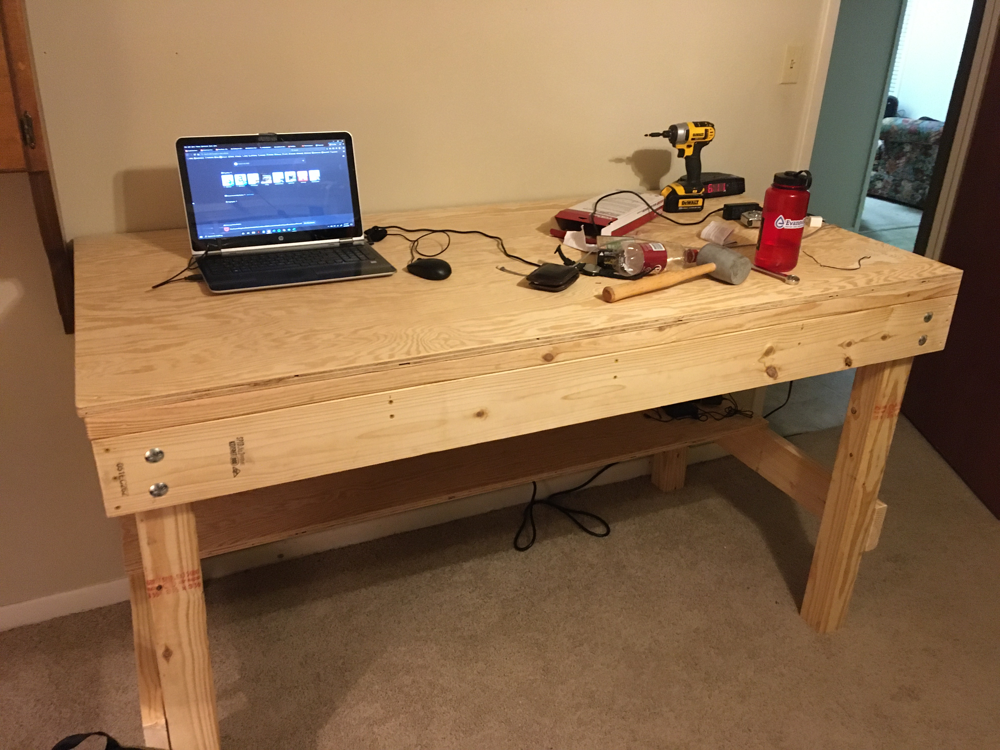

The Workbench

At the end of 2020, my roommate Sam moved out and I finally had the whole room to myself. My first order of business was to create a workbench for my room that I could use for everything, while able to support Jabba the Hutt. Initially I wanted to use a 4'x8' sheet of plywood as the main top (to skip a lot of plywood cutting), but 32 square feet was a lot of space in my bedroom. I settled on cutting the 4' x 8' sheet of plywood down to 3' x 6'. The top is actually removable and held on by screws around the edge so that it can be replaced in the event it gets too beat up from use. If I had to redo this project while still at that house in Ruston, I would have settled on a 2' x 6' bench top. The extra foot of depth was a lot and, as all flat surfaces tend to do, it became temporary storage for many things. I kept my Prusa Mini+ 3D printer on top and built a mount on one of the legs to hold the filament spool.